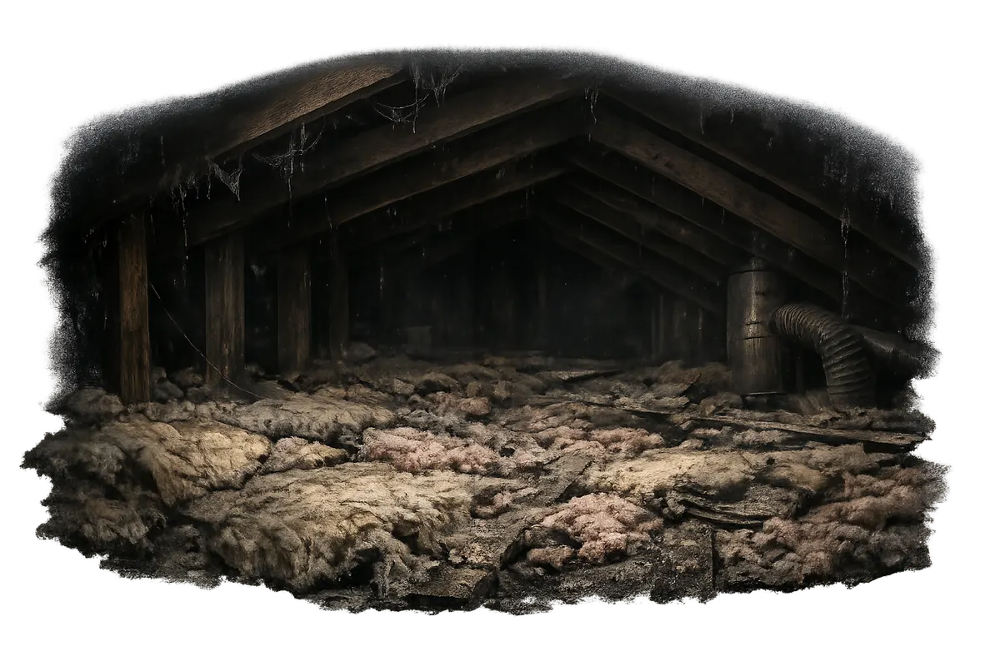
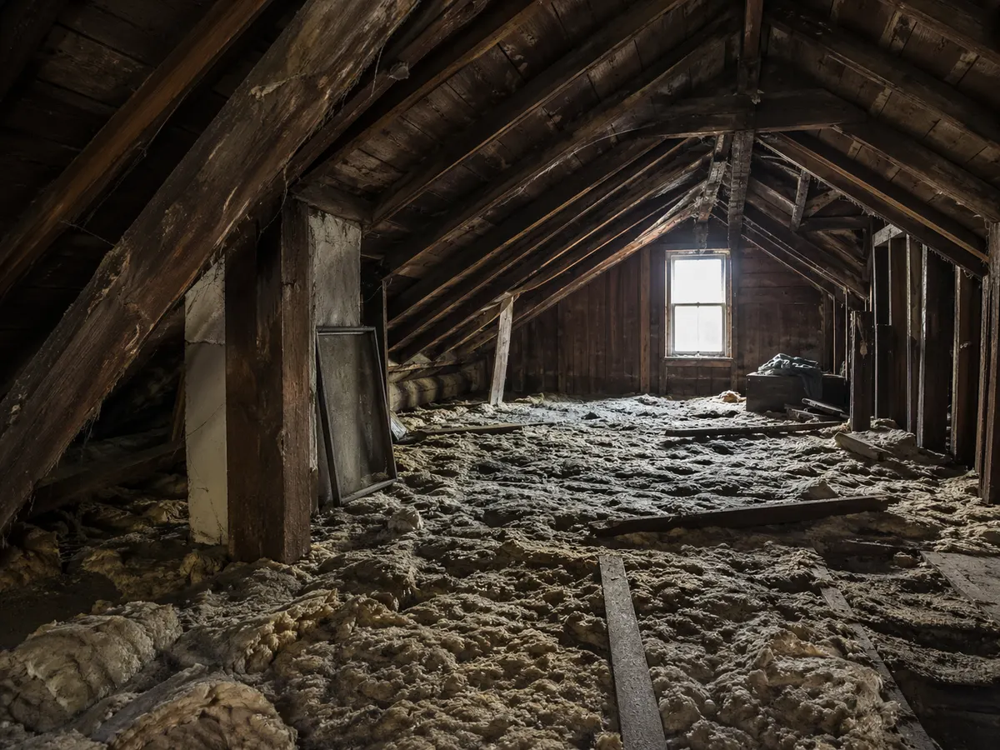
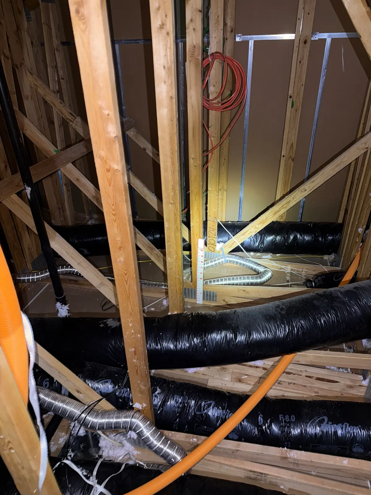
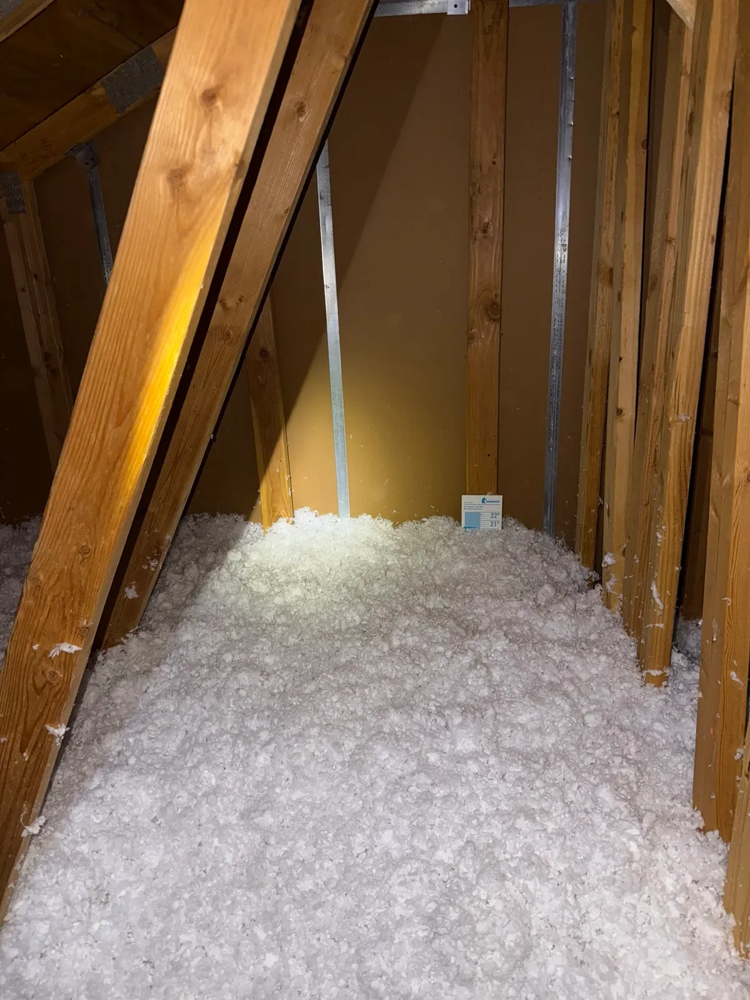
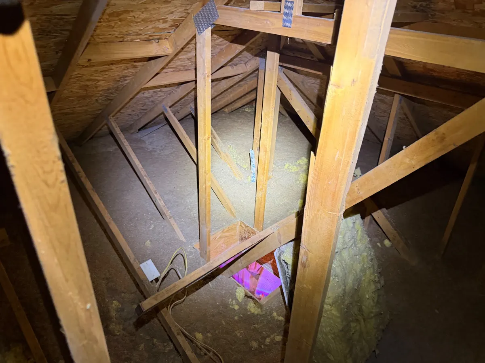
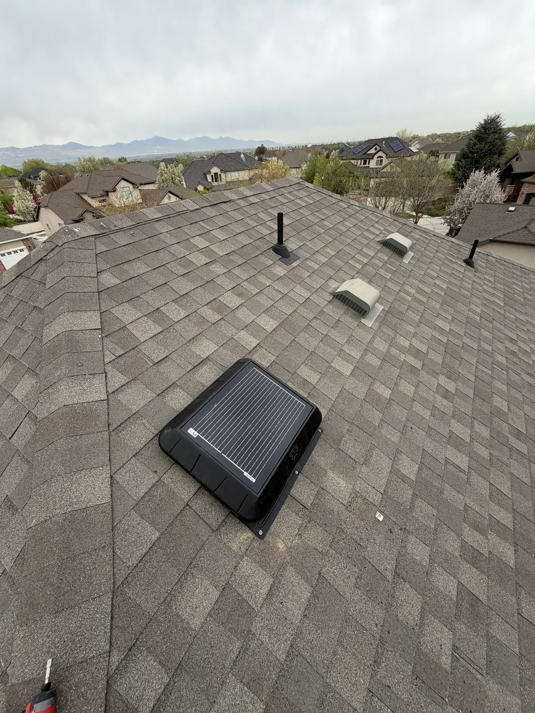
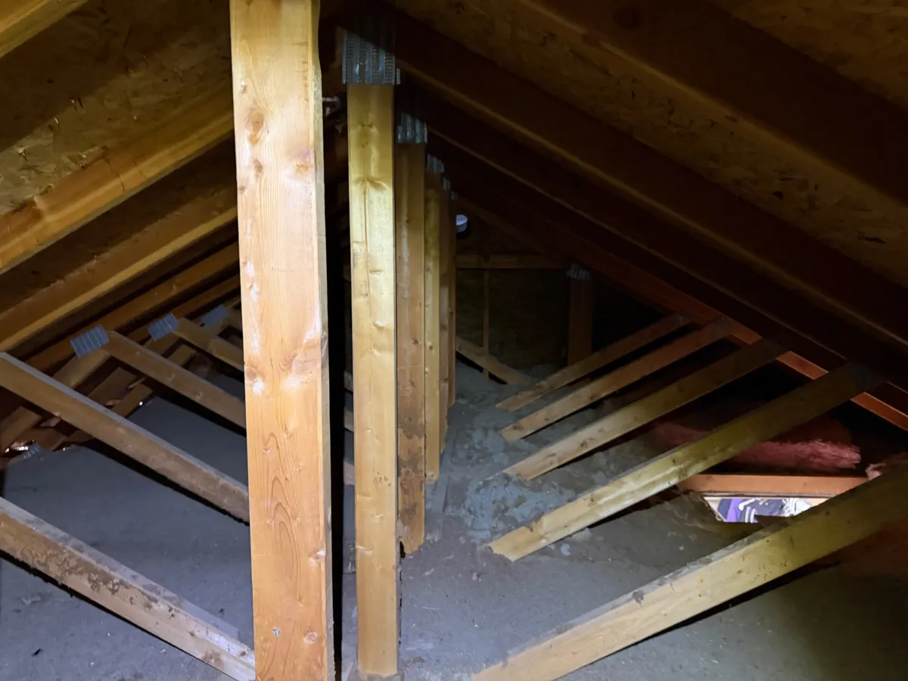
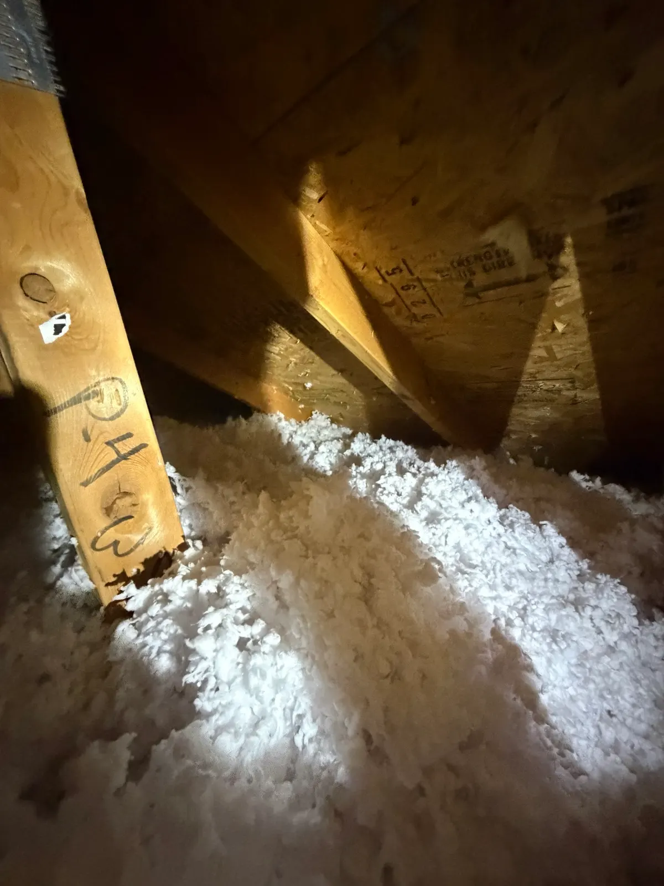

Upper-level heat gain
Larger homes and exposed attic volume can make heat buildup harder to ignore.
Service Area
In Draper, homeowners often call when larger homes, broad rooflines, or exposed upper levels make comfort harder to keep consistent from room to room. Good Attic helps Draper homeowners solve those attic-driven issues with attic insulation, insulation removal, attic pest remediation, attic fans, and attic air sealing.
Draper Attic Health Score
Compressed or missing insulation
Air leaks around attic penetrations
Dust, odors, or contaminated material
Pest activity or nesting debris
Contaminated insulation removed
Air leaks sealed for efficiency
Attic fully sanitized
Ventilation optimized
Fresh insulation installed
A Good Attic quietly changes how your whole home feels.
Draper Attic Health Score
Compressed or missing insulation
Air leaks around attic penetrations
Dust, odors, or contaminated material
Pest activity or nesting debris
Contaminated insulation removed
Air leaks sealed for efficiency
Attic fully sanitized
Ventilation optimized
Fresh insulation installed
Common local issues
Larger homes and exposed attic volume can make heat buildup harder to ignore.
The size of the home does not protect it from attic underperformance.
Comfort improvements often work best when removal, sealing, insulation, and ventilation are evaluated together.
ATTIC INSULATION, REMOVAL & RESTORATION
Whether you need more insulation, old material removed, or help after pests, Good Attic can take a look and explain the work your attic needs. You do not have to choose the solution before the visit.
Good Attic looks beyond insulation depth. We also check the old material, air leaks, ventilation, and cleanup needs so you understand what should happen before new insulation goes in.
Removal costs depend on attic access, how much material needs to come out, contamination, and cleanup. Air sealing and replacement insulation also affect the total. An onsite quote makes the work and price clear.
Blown-in insulation can be the right finish layer, but only after the attic is ready for it. Good Attic checks old insulation, air leaks, soffit airflow, and coverage before recommending a top-off or full rebuild.
When pests have contaminated the insulation or several attic problems overlap, we can bring removal, cleanup, air sealing, entry-point work, and fresh insulation together in one restoration plan.
HELPFUL ATTIC GUIDES
Hot rooms, old insulation, and pest damage can raise different questions. These guides explain the options and help you prepare for an attic assessment.

Draper • Restoration guide
Learn when old or damaged insulation needs to come out before cleanup, air sealing, and replacement.
Read the restoration guide
Draper • Comfort guide
Learn how insulation, air leaks, and ventilation can contribute to hot upstairs rooms or an uncomfortable room over the garage.
Read the comfort guide
Draper • Air sealing guide
See why attic-floor gaps are worth addressing before they are covered with new insulation.
Read the air sealing guideSTART WITH YOUR ATTIC
Start with what you have noticed at home. We will check the attic, explain what may be contributing to the problem, and help you decide what to address first.
Draper projects often involve larger homes, premium expectations, broad roof exposure, and upper levels where a small attic weakness can affect several rooms.
Uneven bedroom temperatures or an uncomfortable upper floor are reasons to inspect the attic rather than assume the HVAC system needs more work.
The assessment should look at whether the attic needs a full performance sequence: removal if needed, air sealing, insulation depth, and ventilation fit.
Start with a whole-attic plan rather than a single-product fix so the finished scope matches the size and expectations of the home.
UNDERSTAND YOUR ESTIMATE
The before-and-after photos from Draper show attic conditions before the work and the finished space afterward. Your own assessment will explain what is needed in your attic.

Draper estimate context
Learn how attic access, existing insulation, removal, air sealing, and replacement material can affect the price.
Read cost guideYour attic assessment
See what an attic assessment covers, including insulation, air leaks, ventilation, access, and signs of pest damage.
Read inspection guide
Homeowner experiences
Read what homeowners say about their experience with Good Attic, from the first visit through the finished work.
Open reviewsFINDING THE RIGHT APPROACH
You do not need to choose a service from a list before we visit. We will look at the insulation and the space around it, then explain which work belongs in the plan and why.
If the insulation is clean and dry, a top-off may make sense. We still check for attic-floor air leaks and preparation needs before adding more.
Start with removal or pest issue restoration before adding new insulation. Covering a compromised base layer is usually the weaker long-term decision.
Once insulation and air leaks have been checked, we can explain whether attic fan or ventilation work may also be useful.
ATTIC INSULATION
Fresh insulation works best over a prepared attic. We check whether the old material can stay, look for air leaks, and explain whether a top-off or replacement makes sense.

Local attic services
Learn about blown-in insulation, preparing the attic, and deciding between a top-off and replacement.
Explore attic insulation
Cost guide
See how access, removal, cleanup, and the amount of new insulation can change the quote.
Read cost guide
Decision guide
Compare blown-in and rolled insulation and see how attic access, obstacles, and installation quality affect the choice.
Compare optionsINSULATION REMOVAL
Old insulation may need to come out before the attic can be cleaned, air sealed, and rebuilt. We will explain the removal work, what affects the cost, and what needs to happen before replacement insulation goes in.

Local attic services
See how old insulation is removed and what happens before cleanup, air sealing, and replacement.
Explore insulation removal
Decision guide
Understand when existing insulation can stay and when removal is the better starting point.
Compare options
Fresh insulation
Learn about installing fresh insulation after the attic has been cleaned and prepared.
Explore attic insulationATTIC AIR SEALING
Gaps around pipes, wiring, wall tops, and the attic hatch can let air pass between the home and attic. Sealing those gaps is easier before they are covered by a new layer of insulation.
Local attic services
Learn about sealing gaps around attic hatches, pipes, wiring, and other openings before insulation is installed.
Explore air sealing
Decision guide
Understand the difference between low insulation and air leakage, and why some attics need both addressed.
Compare options
Insulation sequence
See what goes into the final insulation layer after removal, air sealing, and other preparation.
Explore attic insulationPEST CLEANUP & PREVENTION
Getting the animals out does not remove what they left behind. If pests have contaminated the insulation, Good Attic recommends full remediation: remove the old material, clean the attic, address entry points, and prepare for fresh insulation.
Local attic services
Learn about contaminated-insulation removal, cleanup, entry-point work, and restoring the attic after pests.
Explore pest cleanupContamination guide
Learn which signs may point to pest contamination and why the insulation needs a closer look.
Read contamination guideRestoration guide
Understand what pests can leave behind and how removal, cleanup, exclusion, and fresh insulation fit together.
Read restoration guideATTIC VENTILATION
A hot upstairs room does not automatically call for a fan. We look at insulation, attic air leaks, and ventilation together before explaining whether fan support belongs in the plan.

Local attic services
Learn when attic fan support may fit and what else should be checked before a fan is recommended.
Explore attic fans
Decision guide
Compare attic fan work with insulation, air sealing, and ventilation preparation so you understand the different roles.
Read fan guide
Comfort guide
Explore why upstairs rooms can stay hot and what to check before choosing attic work.
Read comfort guideYOUR ATTIC ASSESSMENT
We look at the attic as a whole before recommending a service. You will see what we found and understand why each part of the work matters.
Good Attic checks whether homes near Draper have a clean top-off opportunity, a settled insulation layer, or attic material that is no longer worth building on.
The Salt Lake City team documents whether open attic bypasses, dusty airflow, or weak coverage are helping drive the comfort complaints homeowners notice first.
If old insulation needs to come out before cleanup or air sealing, we will show you why and explain the order of work.
Real attic proof
These are real attic photo sets from Draper homes, showing documented attic conditions before the work and the finished attic afterward.


Real attic photos from a Draper home showing the documented attic condition before work and the finished attic afterward.
Real before/after photo set

Real attic photos from a Draper home showing the documented attic condition before work and the finished attic afterward.
Real before/after photo set

Real attic photos from a Draper home showing the documented attic condition before work and the finished attic afterward.
Real before/after photo setWHEN MORE WORK IS NEEDED
Sometimes several problems need attention together. We will explain the work in a clear order so you understand what needs to happen before the attic is reinsulated.
When homes in Draper have hot rooms, dirty insulation, and higher energy strain at the same time, the attic usually needs a broader plan than a one-line product pitch.
If compromised insulation or debris is covering the attic floor, the project often expands because cleanup, removal, or prep work need to happen before the final improvement belongs.
Removing damaged or contaminated material can make room for cleanup and air sealing before fresh insulation goes in. We will explain why each step belongs in your project.
Available services
Learn about the work we offer, from insulation and removal to pest cleanup, air sealing, and attic fans.
Draper
Improve insulation coverage after checking the old material, air leaks, and preparation needs.
Explore attic insulation
Draper
Remove compromised attic material so the space can be cleaned up, sealed, and rebuilt the right way.
Explore insulation removalDraper
Clean up the attic after rodents or other attic pests so the space can be sanitary, usable, and ready for restoration.
Explore pest cleanup
Draper
Support attic airflow with fan solutions that help reduce trapped heat and back up the rest of the attic strategy.
Explore attic fans
Draper
Reduce air movement through gaps between the living space and attic as part of the insulation and preparation work.
Explore air sealingHELPFUL ATTIC GUIDES
These guides explain what happens during an assessment, what can affect the price, and when an attic may need more than another layer of insulation.
Your attic assessment
See what happens during an attic visit and how photos and findings help you understand the recommendation.
Read inspection guide
Comfort symptom guide
This guide helps Draper homeowners connect upstairs discomfort to the attic causes that usually need insulation, sealing, or broader correction.
Read comfort guidePest cleanup guide
This guide helps Draper homeowners understand when the attic needs a cleaner reset instead of a small cleanup or quick top-off.
Read cleanup guideLocal cost guide
Learn how access, old insulation, cleanup, air sealing, and new material affect the project price.
Compare cost driversWhy homeowners call
You should receive a clear explanation of the attic and a quote that shows how the work fits together.
Bigger homes often need more coordination between attic systems to perform well.
You should understand the findings, the recommended work, and the price before making a decision.
GETTING STARTED
Your local team
Learn about our Salt Lake City team, the attic services we offer, and the nearby communities we serve.
Meet your local teamExpectation-setting guide
See what an attic visit covers and how the findings help explain the recommended work.
Read the inspection guideYOUR LOCAL GOOD ATTIC TEAM
Our Salt Lake City team comes to your home in Draper to inspect the attic. We will show you what we find, answer your questions, and build the quote with you onsite.
Call or text 385-336-4442 to tell us what is happening in your attic. We will help you arrange a visit and understand what to expect.
We inspect the existing insulation, air leaks, ventilation, access, and any pest evidence. Then we show you the findings and explain the work before you decide.
Our Salt Lake City team serves Draper and nearby communities. You can ask about insulation, removal, pest cleanup, and the preparation your attic may need before new insulation goes in.
FAQ
Yes. Large homes can still struggle with upper-level heat, uneven temperatures, and attic leakage if the attic plan is not working well.
Yes. Many projects involve removal, sanitation, sealing, and re-installation work as one coordinated scope.
No. Fan solutions can help any home when the attic is a real fit for that kind of ventilation support.
Local contact
Call or text the Salt Lake City team and tell us what you have noticed. We will help arrange an assessment; you do not need to know which service to choose first.
EXPLORE ATTIC SERVICES
Learn more about the services and guidance that fit your concern, or reach out when you are ready to have the attic assessed.
Your local team
Learn about our Salt Lake City team, attic services, and coverage in nearby communities.
Meet your local team
Attic insulation
Learn about blown-in insulation, preparing the attic, and deciding whether the existing material can remain.
Explore attic insulation
Insulation removal
See what insulation removal involves and how the attic is prepared for cleanup, air sealing, and fresh insulation.
Explore insulation removalCost guide
Learn how attic size, access, old insulation, cleanup, and preparation can affect an insulation quote.
Read the cost guide